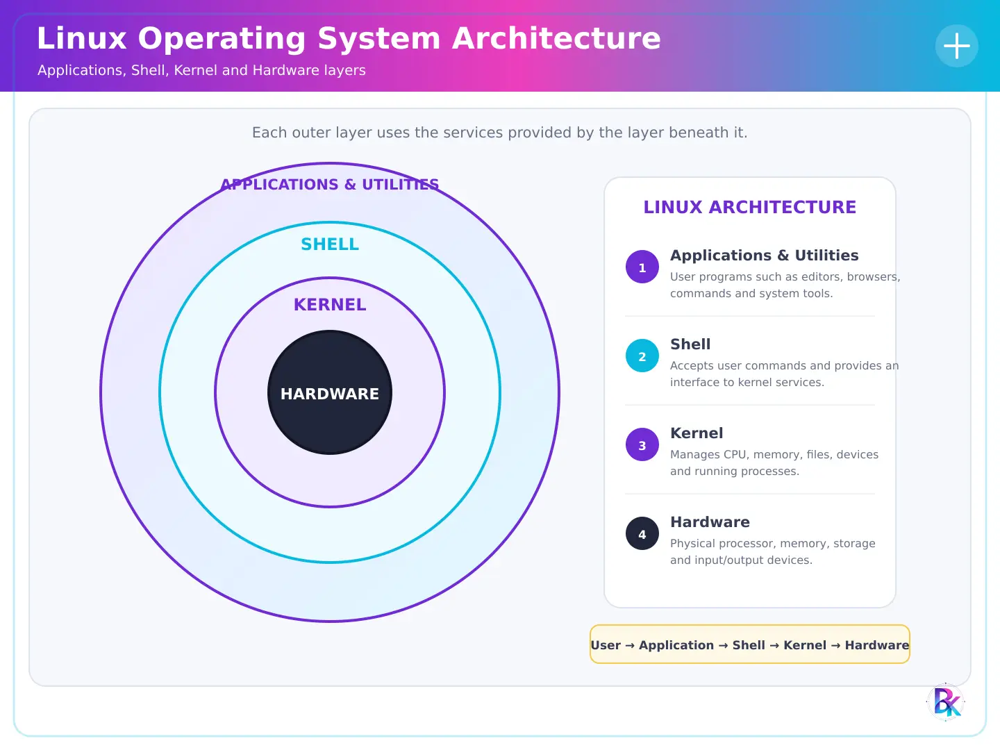
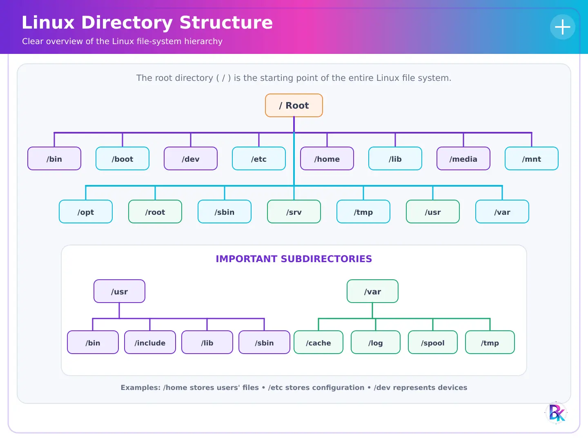

Linux Operating System
Linux Operating System
Linux एक popular, open-source और powerful Operating System है। Operating System वह system software होता है जो Computer Hardware और User के बीच interface का काम करता है। Linux का use desktop computers, servers, smartphones, supercomputers, cloud computing और embedded devices में किया जाता है।
Linux को 1991 में Linus Torvalds ने develop किया था। Linux का सबसे बड़ा advantage यह है कि इसका source code openly available होता है, इसलिए कोई भी developer इसे study, modify और distribute कर सकता है।
Features of Linux
Linux बहुत reliable और secure Operating System माना जाता है। इसके important features इसे दूसरे Operating Systems से अलग बनाते हैं।
Open Source
Linux एक open-source Operating System है। इसका source code सभी के लिए उपलब्ध होता है, इसलिए कोई भी इसे अपनी आवश्यकता के अनुसार modify, customize तथा distribute कर सकता है।
Multi-user
Linux एक multi-user Operating System है, जिसमें एक ही समय पर कई users अलग-अलग accounts से कार्य कर सकते हैं, बिना एक-दूसरे के कार्य में हस्तक्षेप किए।
Multitasking
Linux multitasking को support करता है। इसमें एक ही समय पर कई applications और processes को आसानी से चलाया जा सकता है।
Security
Linux में मजबूत security features उपलब्ध हैं, जैसे user permissions, file permissions, firewall तथा encryption, जो data को सुरक्षित रखते हैं।
Portability
Linux कई प्रकार के hardware platforms पर आसानी से कार्य करता है, जैसे Desktop, Laptop, Server, Smartphone और Embedded Devices।
Stability & Reliability
Linux लंबे समय तक बिना restart किए लगातार कार्य कर सकता है। इसी कारण इसका उपयोग servers और data centers में अधिक किया जाता है।
Stability
Linux लंबे समय तक बिना restart किए लगातार कार्य कर सकता है। इसी कारण इसका उपयोग servers और data centers में अधिक किया जाता है।
Architecture of Linux Operating System
Linux Architecture से तात्पर्य Linux Operating System की layered structure से है, जो यह बताती है कि Hardware, Kernel, Shell, System Libraries तथा User Applications आपस में कैसे कार्य करते हैं। Linux Architecture का मुख्य उद्देश्य system resources का सही प्रबंधन करना तथा programs को सुरक्षित और कुशल (efficient) तरीके से चलाना है। Linux Architecture कई layers से मिलकर बनी होती है, जहाँ प्रत्येक layer का अपना अलग कार्य होता है।

1. Hardware
Hardware Linux Architecture की सबसे निचली layer होती है। इसमें CPU, RAM, Hard Disk, Keyboard, Mouse, Monitor, Printer तथा अन्य input/output devices शामिल होते हैं। Linux का Kernel सीधे hardware के साथ संपर्क करके सभी devices को नियंत्रित करता है।
2. Kernel
Kernel Linux Operating System का सबसे महत्वपूर्ण भाग होता है। यह Operating System और hardware के बीच bridge का कार्य करता है। Kernel memory management, process management, device management, file system management तथा security जैसे महत्वपूर्ण कार्यों को नियंत्रित करता है।
3. Shell
Shell एक command interpreter है, जो user और Kernel के बीच interface का कार्य करता है। User द्वारा दिए गए commands को Shell समझता है और उन्हें Kernel तक पहुँचाता है। उदाहरण के लिए Bash (Bourne Again Shell) Linux का सबसे लोकप्रिय Shell है।
4. System Libraries
System Libraries पहले से लिखे गए functions और programs का संग्रह होती हैं, जिनका उपयोग applications और system programs द्वारा किया जाता है। ये libraries Kernel की सेवाओं को सरल रूप में applications तक पहुँचाने का कार्य करती हैं।
5. User application
यह Linux Architecture की सबसे ऊपरी layer होती है। इसमें Web Browser, Text Editor, Office Software, Media Player, Database Software तथा अन्य application programs शामिल होते हैं। Users इन्हीं applications के माध्यम से Linux Operating System का उपयोग करते हैं।
Basic Linux Commands
Linux में अधिकतर काम Terminal में commands की help से किए जा सकते हैं। नीचे important basic commands दिए गए हैं जो हर student को याद होने चाहिए।
| Command | Use | Example |
|---|---|---|
pwd |
Current working directory दिखाता है। | pwd |
ls |
Files और folders की list दिखाता है। | ls |
cd |
Directory change करने के लिए। | cd Documents |
mkdir |
New directory create करता है। | mkdir notes |
rmdir |
Empty directory remove करता है। | rmdir notes |
touch |
New empty file create करता है। | touch file.txt |
cat |
File content display करता है। | cat file.txt |
cp |
File copy करता है। | cp a.txt b.txt |
mv |
File move या rename करता है। | mv old.txt new.txt |
rm |
File delete करता है। | rm file.txt |
clear |
Terminal screen साफ करता है। | clear |
man |
Command की manual/help दिखाता है। | man ls |
Linux File System
Linux File System files और directories को organized तरीके से store करता है। Linux में everything is treated as a file. इसका मतलब normal files, directories, devices और processes भी file की तरह represent हो सकते हैं।
Linux में root directory को / से represent किया जाता है। बाकी सभी directories इसी root
directory के अंदर होती हैं।

| Directory | Use |
|---|---|
/ |
Root directory, Linux file system की सबसे ऊपर वाली directory। |
/home |
Users की personal files और folders store होते हैं। |
/bin |
Basic binary commands जैसे ls, cp, mv आदि। |
/etc |
System configuration files store होती हैं। |
/var |
Variable data जैसे logs, cache आदि। |
/tmp |
Temporary files store होती हैं। |
/dev |
Device files जैसे disk, keyboard, terminal आदि। |
/usr |
User programs और libraries store होती हैं। |
File Permissions
Linux में files पर permissions होती हैं: read (r), write (w) और execute (x)। ये permissions बताती हैं कि user file को read, modify या run कर सकता है या नहीं।
- r = read permission
- w = write permission
- x = execute permission
VI Editor
VI Editor Linux/Unix का एक powerful text editor है। इसका use text files create और edit करने के लिए किया जाता है। VI editor terminal-based होता है, यानी इसे GUI के बिना command line से use किया जा सकता है।
Modes of VI Editor
| Mode | Explanation |
|---|---|
| Command Mode | Default mode, इसमें commands दी जाती हैं जैसे delete, copy, save आदि। |
| Insert Mode | इस mode में text type किया जाता है। Insert mode में जाने के लिए i press करते
हैं। |
| Last Line Mode | File save, quit और search जैसे operations के लिए use होता है। इसके लिए : press
करते हैं। |
Important VI Commands
| Command | Use |
|---|---|
vi file.txt |
File को VI editor में open करता है। |
i |
Insert mode start करता है। |
Esc |
Insert mode से command mode में वापस आता है। |
:w |
File save करता है। |
:q |
Editor से quit करता है। |
:wq |
Save करके quit करता है। |
:q! |
बिना save किए quit करता है। |
dd |
Current line delete करता है। |
Press i
Type: Linux is an open-source operating system.
Press Esc
Type :wq and press Enter
Linux Installation
Linux Installation का मतलब computer में Linux Operating System install करना है। Linux को direct hard disk पर install किया जा सकता है, dual boot में Windows के साथ install किया जा सकता है, या Virtual Machine में भी install किया जा सकता है।
Requirements for Linux Installation
- Linux ISO file जैसे Ubuntu, Fedora, Linux Mint आदि।
- Bootable USB drive या DVD।
- Minimum RAM और storage space।
- Important data का backup।
- Internet connection, अगर updates install करने हों।
Steps of Linux Installation
- सबसे पहले Linux distribution की ISO file download करें।
- Rufus या किसी bootable USB tool से bootable USB बनाएं।
- Computer restart करके BIOS/Boot Menu open करें।
- USB drive को boot device select करें।
- Linux installer open होने पर language और keyboard layout select करें।
- Installation type choose करें: Normal installation, Minimal installation या Dual boot।
- Disk partition select करें। ध्यान रखें कि wrong partition select करने से data delete हो सकता है।
- Username और password create करें।
- Installation complete होने के बाद system restart करें।
- Restart के बाद Linux login screen open होगी।
Types of Linux Installation
| Type | Explanation |
|---|---|
| Fresh Installation | पूरी hard disk पर Linux install किया जाता है। |
| Dual Boot | Windows और Linux दोनों same computer में install होते हैं। |
| Virtual Machine Installation | Linux को VirtualBox/VMware जैसे software में run किया जाता है। |
| Live USB | Linux को install किए बिना USB से directly run किया जाता है। |